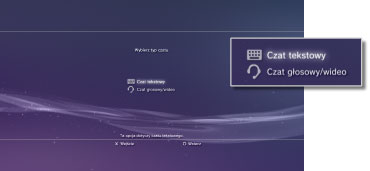
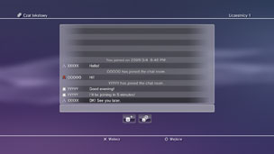

Znajomi > Czat tekstowy > Rozpoczynanie lub kończenie czatu tekstowego
Rozpoczynanie lub kończenie czatu tekstowego
Aby używać tej funkcji, konieczne może być zaktualizowanie oprogramowania systemowego.
Czaty tekstowe można prowadzić z osobami, które znajdują się na liście znajomych.
Rozpoczynanie czatu tekstowego
1. |
Wybierz opcje |
|---|---|
2. |
Wybierz opcję |
|
 |
|
3. |
Wprowadź nazwę pokoju czatu tekstowego i wybierz opcję [OK]. |
4. |
Wybierz znajomych, których chcesz zaprosić do czatu, a następnie wybierz opcję [OK]. |
|
 |
 (Rozpocznij nowy czat).
(Rozpocznij nowy czat). (Czat tekstowy).
(Czat tekstowy).Wskazówki
- Aby prowadzenie czatu tekstowego było możliwe, należy zalogować się do sieci PSNSM.
- W przypadku czatu tekstowego nie jest wysyłana wiadomość z zaproszeniem do czatu.
- Do pokoju czatu tekstowego może dołączyć maksymalnie 16 osób.
- Nie można korzystać z funkcji czatu tekstowego, jeśli zostały wprowadzone ograniczenia dotyczące korzystania z tej funkcji. Informacje na temat ustawień kontroli rodzicielskiej zawiera sekcja [Informacje o menu XMB™] > [Korzystanie z ustawień kontroli rodzicielskiej] w niniejszej instrukcji.
Dołączanie do pokoju czatu tekstowego
Po otrzymaniu zaproszenia do czatu tekstowego w prawym górnym rogu ekranu zostanie wyświetlone powiadomienie. Wybierz opcję  (Pokój czatu (tylko tekst)) w obszarze
(Pokój czatu (tylko tekst)) w obszarze  (Znajomi), a następnie wybierz pokój czatu, do którego chcesz dołączyć.
(Znajomi), a następnie wybierz pokój czatu, do którego chcesz dołączyć.
Wskazówki
- Jeśli dla opcji [Powiadomienia] w obszarze
 (Ustawienia) >
(Ustawienia) >  (Ustawienia systemu) wybrano ustawienie [Nie wyświetlaj], powiadomienia nie są wyświetlane.
(Ustawienia systemu) wybrano ustawienie [Nie wyświetlaj], powiadomienia nie są wyświetlane. - W przypadku większości gier do czatu tekstowego można dołączyć w trakcie rozgrywki. W tym celu naciśnij przycisk PS na kontrolerze bezprzewodowym i wybierz żądany pokój czatu w obszarze (Znajomi) > (Pokój czatu (tylko tekst)). Aby powrócić do ekranu gry, naciśnij przycisk PS.
- Jednocześnie można dołączyć do maksymalnie trzech pokojów czatu. Dołączenie do czwartego pokoju czatu spowoduje automatyczne opuszczenie pierwszego pokoju.
- W obszarze (Pokój czatu (tylko tekst)) może być wyświetlanych maksymalnie 20 pokojów czatu. W przypadku dostępności więcej niż 20 pokojów czatu najstarsze pokoje są usuwane w miarę otwierania nowych.
Opuszczanie pokoju czatu
Naciśnij przycisk  , aby zamknąć ekran czatu tekstowego. Wybierz pokój czatu, który chcesz opuścić, naciśnij przycisk
, aby zamknąć ekran czatu tekstowego. Wybierz pokój czatu, który chcesz opuścić, naciśnij przycisk  i z menu opcji wybierz pozycję [Wyjdź].
i z menu opcji wybierz pozycję [Wyjdź].
Wskazówka
Wyłączenie konsoli PS3™ lub wylogowanie z sieci PSNSM powoduje automatyczne opuszczenie pokoju czatu. Po ponownym dołączeniu do danego pokoju czatu wpisy dodane w czasie nieobecności w pokoju nie zostaną wyświetlone.
Usuwanie pokoju czatu
Wybierz pokój czatu, który ma zostać usunięty, naciśnij przycisk i z menu opcji wybierz pozycję [Usuń].
Korzystanie z panelu sterowania
Za pomocą panelu sterowania można wykonywać następujące operacje na ekranie czatu tekstowego.
 |
Zaproś znajomego | Umożliwia zaproszenie znajomego do pokoju czatu tekstowego. |
|---|---|---|
 |
Lista uczestników | Umożliwia wyświetlenie listy osób obecnych w pokoju czatu. |